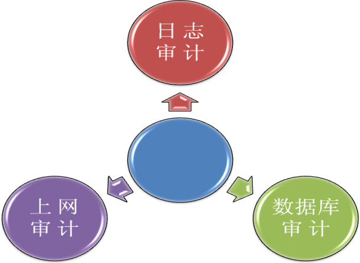
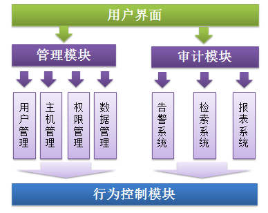

Products and services
应用产品：Oracle EBS、Oracle Real user experience insight(如意)等
系统产品：Oracle Datebase、Oracle Weblogic、Oracle Goldengate、Oracle Label Security、Oracle DB valt等
IBM lotus、IBM Informix、IBM DB2、IBM Websphere等
正版化Windows 7、8、Office2000-2010、Sql server等
借助APM进行系统状态的监控，包括操作系统的资源使用状态【CPU,MEM，DISK,NETWORK】等的使用状态、借助APM实现对业务系统的运行状态的性能监控【发现性能缓慢的业务调用的详细的代码，及业务对应的SQL信息】
借助APM实现对系统的业务调用的应用性能的分析【通过长时间的数据收集，帮助我们能对业务的整体性能及系统的整体性能做有效的性能调用分析，便于从资源消耗，业务吞吐量上为我们的业务规划及系统的容量规划做详细的资源准备】
借助APM监控的数据及我们定期基于系统上的其他数据，定期的为客户做系统的巡检及健康报告。 帮助客户对IIS及操作系统层面的参数优化提出建议
故障定位及紧急性能救援服务
借助于我们的APM工具及我们服务经验，我们能基于应用的性能和数据库的性能进行有效的联合分析，从APM端抓取到的基础应用性能的数据到通过综合的数据分析帮助用户定位故障的真正发生原因 帮助客户从数据库层面的简单的SQL性能的质量分析到基于数据库性能的深层次分析【包括CPU,MEM，I/O，网络】等各种类型的消耗分析及对数据库性能瓶颈的定位。提供紧急的故障支援，帮助客户最快的速度进行性能故障定位及优化方案的实施落地
（具体方案及详情请咨询相关销售）
应用性能管理(APM)是考虑到符合组织结构和保有系统现状的适当投入和可用性，建立有效的性能监控及故障应对战略，构筑性能管理体系。应用性能管理(APM)与传统上的系统管理解决方案（SMS和NMS）不同，强化了从实际提供服务的系统的服务观点上的性能现状和内部应用观点上的性能故障对应及分析，进而以更加智能的方法寻求大客户服务的稳定，最终可以有效降低投入费用（TCO）。如今在这个复杂的企业环境中，通过终端对终端（End-to-end）想全部监控，可能带来因导入高价位的解决方案中存在不必要的追加开发领域费用和无法预计的管理费用的增加。而且，还可能造成各个专管领域组织缺乏专门性，因此要从投入对比效果角度慎重考虑
LogBase数据库安全审计系统(以下简称LogBase)是主要针对各类数据库系统进行安全监控及操作审计。
LogBase对信息系统中各类数据库系统的用户访问行为进行实时采集、实时分析，用户登录、登出数据库，对数据表内容做插入、删除、修改等操作，都可以被记录和分析，记录内容可以精确回放SQL 操作语句。LogBase可以通过规则设置及时发现数据库非法访问行为并产生告警，可以以短信或邮件方式通知管理员。采集到的信息经过规范化、过滤和归并等处理后，以统一格式的日志形式进行集中存储和管理，结合丰富的日志审计报表及关联分析功能，管理员能方便高效的对数据库系统进行有针对性的安全审计，实现对数据库系统安全状况的全面审计。遇到特殊安全事件和系统故障，LogBase可以确保日志完整性和可用性，协助管理员进行故障快速定位，并提供客观依据进行追查和恢复。
LogBase数据库安全审计系统支持以下主流数据库进行安全审计：
产品功能
LogBase日志管理综合审计系统(以下简称LogBase)是系统通过监测及采集信息系统中的系统安全事件、用户访问行为、系统运行日志、系统运行状态等各类信息，经过规范化、过滤、归并和告警分析等处理后，以统一格式的日志形式进行集中存储和管理，结合丰富的日志统计汇总及综合分析功能，实现对信息系统整体安全状况的全面审计。
LogBase日志管理综合审计系统具有三大功能，如图所示：
LogBase对日志管理综合审计系统进行了更广泛的定义：日志信息不仅仅是硬件设备及各类信息系统在运行中产生的日志记录，还包含LogBase针对用户的上网行为分析以及数据库操作行为分析所形成的记录信息。
LogBase审计系统提供全面的日志采集功能，通过多种方式采集信息系统中众多类型的硬件设备、操作系统、应用系统等格式不一的日志数据。LogBase基于对各类日志的理解和深入分析，并提供日志专家规则库，实时智能分析海量日志数据，呈现给用户可读性强、更易理解的日志信息。全面日志数据基础上的报表审计功能，为用户提供多角度、全方位的信息系统综合分析审计报告。
LogBase审计系统提供基于底层协议识别的流量分析功能，通过旁路侦听（Sniffer Mode）的网络无干扰方式，对经过信息系统边界的双向网络流量进行分析，可对网站访问、邮件收发、上传/下载、即时通讯、网络游戏、炒股等提供完整的行为记录及内容还原功能。可自定义关键字库过滤，进行细粒度的上网行为追踪审计。
LogBase审计系统提供针对主流数据库操作行为的分析功能。无需修改数据库配置及网络架构，通过在数据库服务器前端进行旁路侦听的方式，可对访问数据库的网络地址、用户帐号、数据库名、表名、操作指令明细、返回值等信息提供完整记录。通过预设规则，对用户越权、非法访问数据库，篡改、删除、窃取数据的行为进行实时告警。提供丰富的审计报表，如：异常登录统计报表、数据库高危操作明细报表、帐号登录失败明细表等等，满足用户合法、合规性审计需求和数据库安全管理需要。
Logbase运维安全审计系统是新一代操作行为安全审计系统，它采用软硬件一体化设计，通过B/S方式(https)进行管理，其主要功能为实现对运维人员操作服务器、网络设备、数据库过程的全程监控与审计，以及对违规操作行为的实时阻断。
该产品采用先进的设计理念，支持对多种远程维护方式的支持，如字符终端方式(SSH、Telnet、Rlogin)、图形方式（RDP、X11、VNC、Radmin、PCAnywhere）、文件传输（FTP、SFTP）以及多种主流数据库的访问操作。
Logbase运维安全审计系统采用模块化设计，主要由以下模块组成：行为控制模块、审计模块、管理模块、存储模块、用户管理接口模块，各模块间关系如下图所示：
实现对网络、数据库、服务器维护过程的网络数据包代理转发、行为还原及记录、违规行为阻断功能；
实现维护用户管理、主机资产管理、用户授权与访问权限管理，以及对审计记录的数据存储控制；
实现行为安全审计功能，包括实时违规行为告警系统、历史记录检索系统以及报表系统；
提供运维人员审计管理接口，以及运维用户的远程工具使用界面。
Logbase运维安全审计系统采用协议代理方式对各种维护协议进行转发，并在转发的过程中分别模拟了协议的客户端与服务端，具体如下图所示：
当客户端通过运维审计系统访问服务器时，首先由运维安全审计系统模拟成远程访问的服务端时，接受客户端发送的信息，并对其进行协议的还原、解析、记录，最终获得客户端发送的指令信息，再模拟成操作的客户端，与真正的目标服务器建立通讯，并转发用户端发送的指令信息。接收到服务器端的返回信息后，再反向执行此过程，将返回值发送给客户端从而实现对各种维护协议的代理转发过程。在通讯过程中，Logbase运维安全审计系统会记录各种指令信息，并根据违规规则库对指令信息进行比对，如发现违规的操作行为，则终止数据包的转发，并中断整个TCP会话。